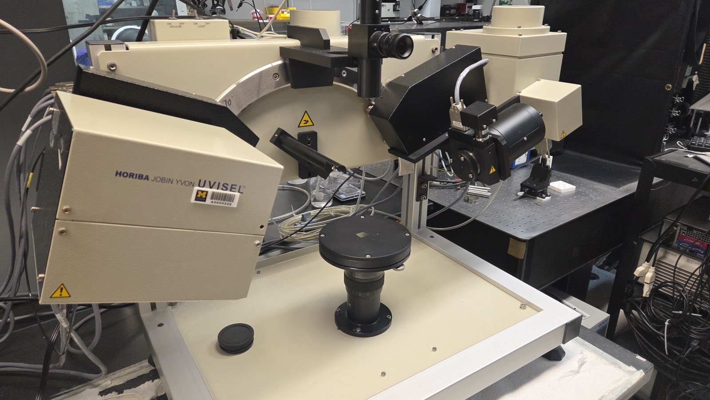
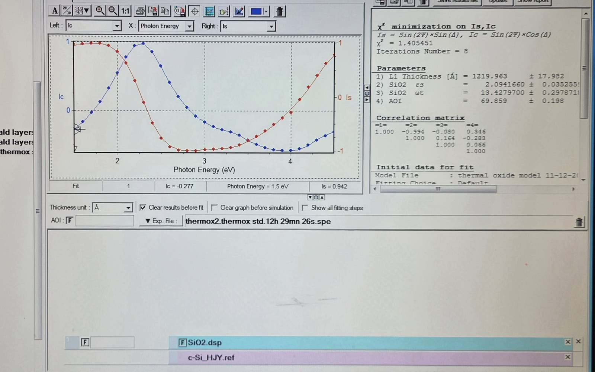
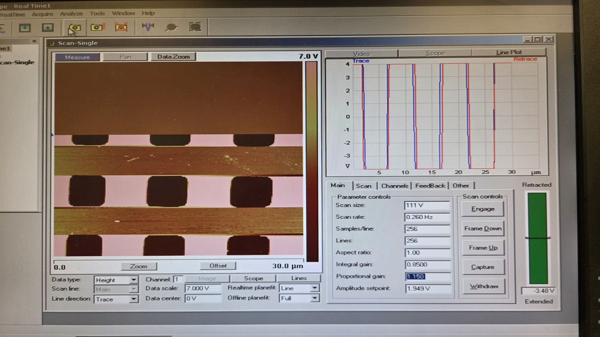
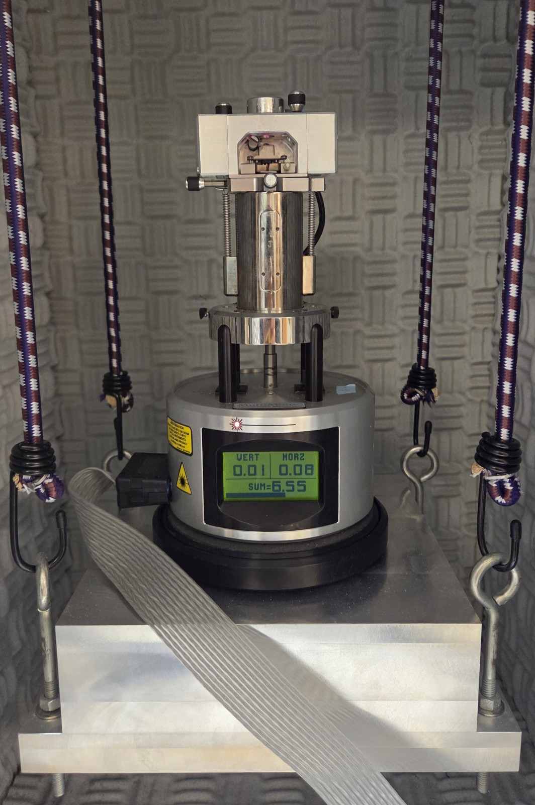

Research.
At DAEYANG the interface was something I could hold in tweezers. Here it's a few nanometers thick and I need an instrument to know it exists at all.
Maldonado Group
active
Ann Arbor, MI
The Maldonado Group works on electrochemistry and semiconductor materials under Prof. Stephen Maldonado. I joined in April 2026 on the thin film side, and since May I have been responsible for the group's spectroscopic ellipsometer and AFM.
The work has two halves. One is measuring how thick a layer actually came out and what the surface looks like afterward. The other is making the samples in the first place, starting from a bare silicon wafer. Doing both means I know the history of a sample before I ever put it under an instrument.
Surface analysis
Spectroscopic ellipsometry
On the HORIBA UVISEL I measure film thickness by building a layer model in DeltaPsi2 and fitting it to the measured spectra. The fit quality, χ², is the check on whether the model, the sample, and the instrument agree.
Calibration runs on an aluminum mirror standard, and every calibration is checked against a 100 nm thermal oxide standard before a real sample goes on the stage.


Atomic force microscopy
On the Veeco MultiMode I image in tapping mode. The cantilever oscillates near resonance and lightly taps the surface, the feedback loop holds that oscillation at a setpoint, and the scanner's vertical motion becomes the height map. I scan my own samples and other group members', then measure step heights and raised growth features in NanoScope Analysis.
The scanner is calibrated against pitch and step height standards. When a 100 nm standard read 110 nm, I recalculated the Z sensitivity from 11.32 to 10.29 nm/V, and the next scan read 100.1 nm. I also train new users on startup, laser alignment, and scan settings.


Sample fabrication
Samples start as pieces of n-type Si(111) wafer and go through a cleaning and etching sequence before any film goes on. Solvents strip grease and organics, piranha oxidizes what is left, NH₄F and HF take off the oxide in the HF hood, and a plasma treatment follows.
The film is then grown by thermal ALD, one cycle at a time, with the cycle count set for the target thickness. Al₂O₃ comes first, with other layers to follow. The question I keep coming back to comes before the deposition. How does the surface preparation decide whether a film grows evenly across the wafer and lands at the thickness it was meant to? AFM then checks what actually grew.

